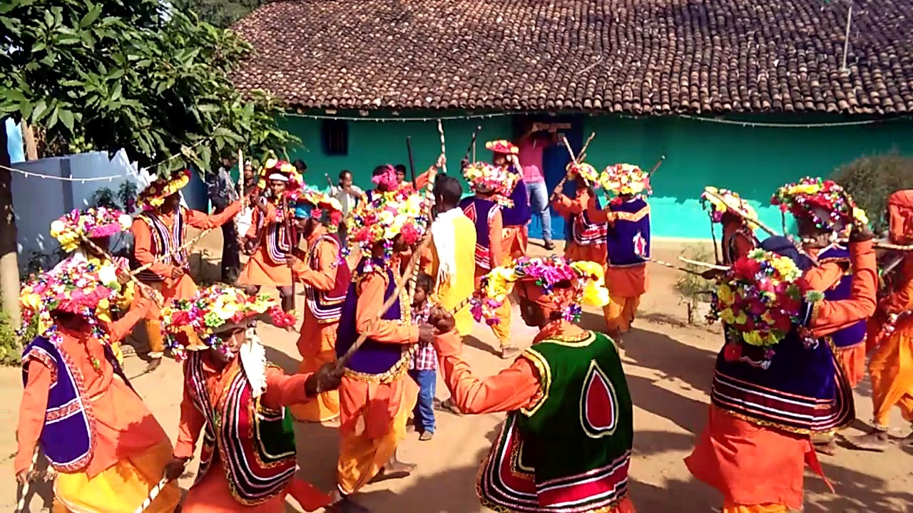
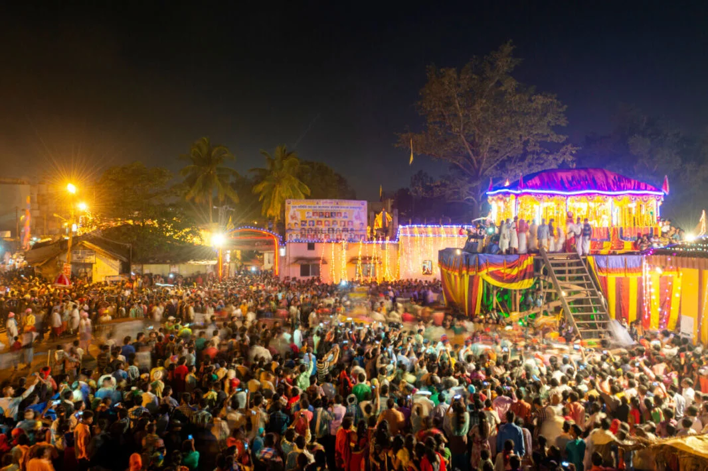
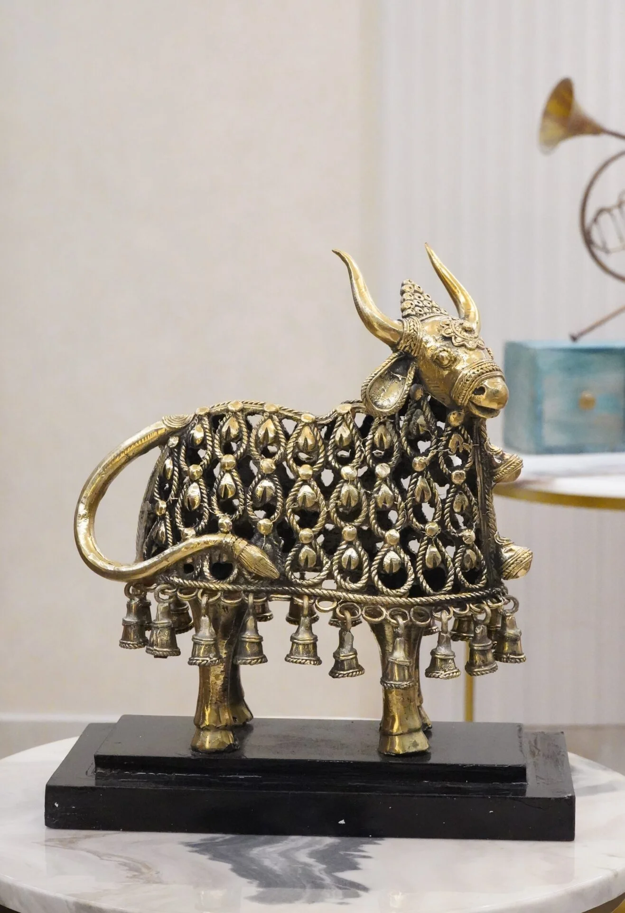
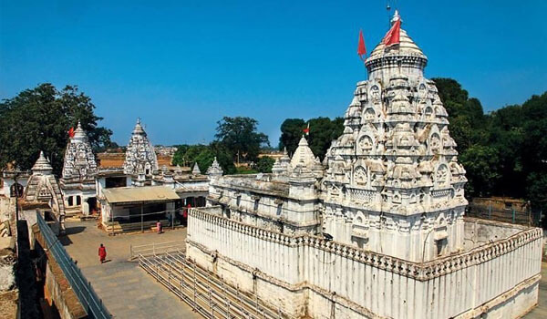

Land of Tribes, Folk Arts & Festivals

Chhattisgarh is known for vibrant tribal dances such as Panthi, Raut Nacha, and Karma. These dances are performed during festivals, harvests, and religious celebrations, accompanied by folk songs and drums.
The performances tell stories from local legends and tribal folklore.

Major festivals include Bastar Dussehra, Hareli, and Madai. Bastar Dussehra is a 75-day long celebration showcasing tribal rituals, music, and traditional ceremonies.
Festivals reflect Chhattisgarh’s tribal heritage, folklore, and communal traditions.

The state is famous for tribal handicrafts, bell metal Dhokra art, terracotta figurines, and Dokra metal crafts. Artisans preserve tribal legends and cultural stories through their craftwork.
Folk tales and local myths are depicted in paintings, masks, and ornaments.

Chhattisgarh has historical temples like Rajim Kumbh temples and Bhoramdeo Temple. Temples host folk performances and festivals preserving tribal rituals and traditions.
These heritage sites connect locals and visitors with the cultural and spiritual folklore of the state.
Chhattisgarh’s culture is deeply rooted in tribal traditions, folk dances, handicrafts, and festivals. Folklore, legends, and tribal rituals are preserved through dance, art, and music, making it a rich cultural hub of central India.